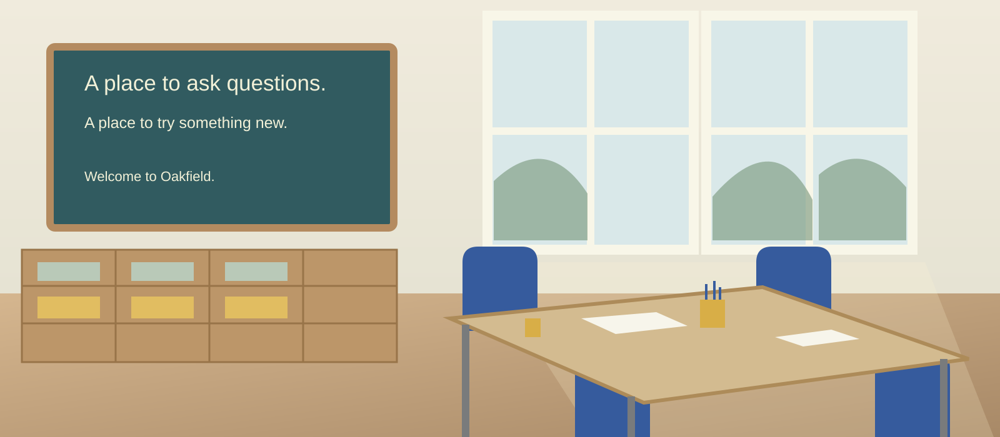

Year 4 bring the Romans to life
A week of shields, mosaics and a very convincing march around the playground.

Two classes in every year group, a big field, a forest school and a team that has been here for years.
An original classroom illustration for this fictional school concept.
Holidays and inset days for 2026 to 2027
Lunch menu ↗This week's meals and how to pay
Thank you for visiting our website. Oakfield is a school where children feel safe enough to try, get it wrong and try again. We keep our classes calm, our expectations high and our door open.
If you are thinking of joining us, the best way to know is to come and see a normal school day. I would love to show you round.
Mrs Helen Carter
Head Teacher (fictional school concept)
Original illustrative studies. Activities described in the concept brief.
A week of shields, mosaics and a very convincing march around the playground.
Thank you to every family who donated. We filled the minibus twice.
Paid for by two years of cake sales from our Friends of Oakfield.
All 3 concept news stories are shown, newest first. Select a story for its full sample update.
Sample 2026 autumn dates from the brief. Full 2026 to 2027 holidays and inset days require school confirmation.
Explore a sample school week.
Illustrative menu. Confirm allergens, dietary needs and payment arrangements with the real school office. This page accepts no lunch payments.
“Pupils are happy, polite and proud of their school. They know that adults care about them and will help them.”
Ofsted, 2025 Quotation supplied in the concept brief. Not a verified inspection result.
Open mornings run every Tuesday at 9:30 from October to January. No need to dress up, just plan a visit and come along.
Local planner only. Contact details and visits are illustrative.